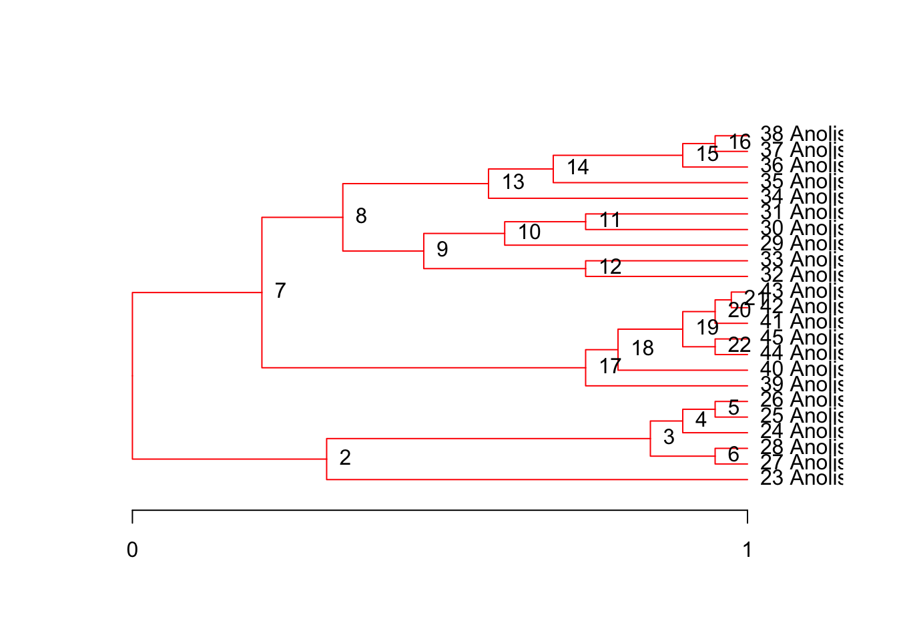
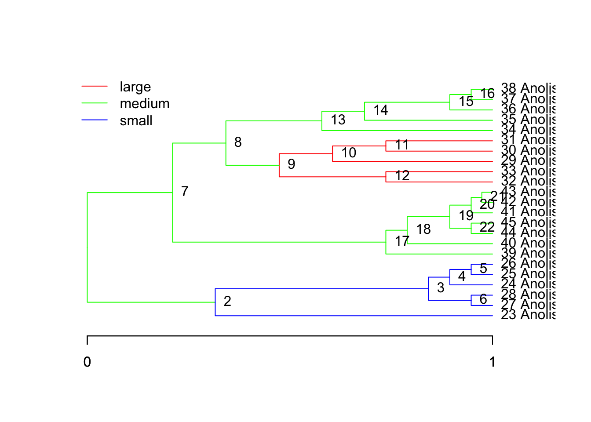
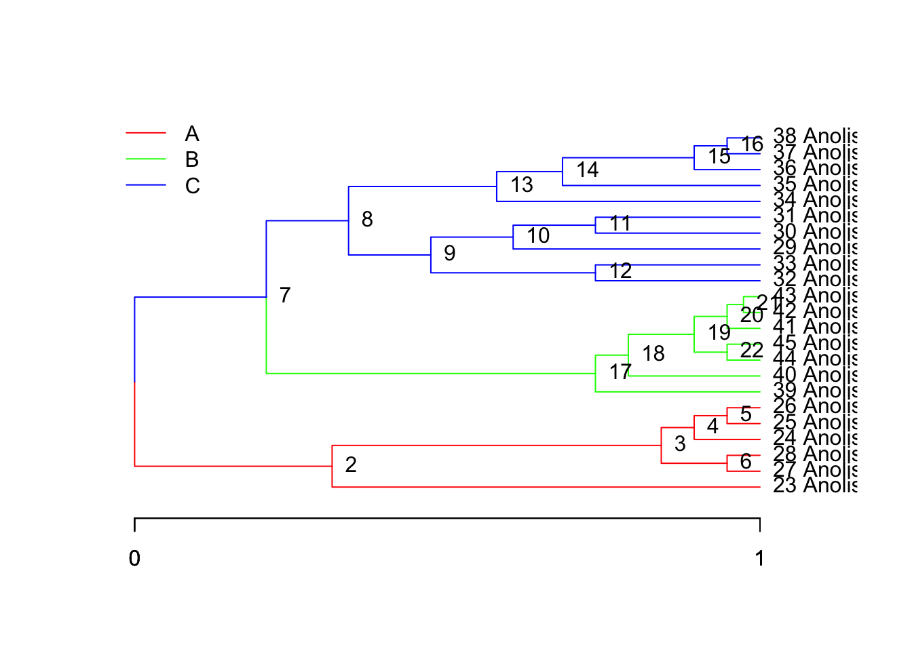

Learning objectives
Goals: - Approaches for adaptive evolution (ouch, slouch, others) - Model-based vs statistical approaches
Concepts: - Model comparison tools in R - Process-based models
Introduction to OU Models
The OU Model for Comparative Analysis
A Brownian motion process can be described using the following differential equation:
\[ dX(t) = \sigma\,dB(t). \tag{1}\]
If we imagine the phenotype \(X\) as changing through time \(t\), this equation says that in a small increment of time, the change will be proportional to the parameter \(\sigma\). Here, \(dB(t)\) is a sample from a Brownian (white noise) process.
A small step towards reality is the OU Process:
\[ dX(t) = \alpha\,(\theta - X(t))\,dt + \sigma\,dB(t). \tag{2}\]
Eq. Equation 2 expresses the amount of change in character \(X\) over the course of a small increment of time: specifically, \(dX(t)\) is the infinitesimal change in the character \(X\) over the infinitesimal interval from time \(t\) to time \(t+dt\). The term \(dB(t)\) is white noise; that is, the random variables \(dB(t)\) are independent and identically-distributed normal random variables, each with mean zero and variance \(dt\). The parameter \(\alpha\) measures the strength of selection. When \(\alpha = 0\), the deterministic part of the OU model is diminished and Equation 2 approaches the familiar BM model of pure drift,
ouch package
See ouch lecture.
Good starting points available in package ouch:
- ?bimac help page for Bimaculatus character displacement dataset
- example(bimac) example of bimac analysis - ?anolis.ssd help page for Anolis sexual size dimorphism dataset
ouch is a package designed to test adaptive hypotheses using variations of the OU process, including BM (Butler and King 2004; King and Butler 2022). OUCH implements a model that fits alpha and sigma parameters to the entire phylogeny, but allows the user to specify which branches belong to different selective regimes. The location of the optima are also fit.
The Data
The data in OUCH are most easily assembled as a data frame. Load the built in example from ouch and then print it to the screen (I only printed the head of the dataset here):
Loading required package: ouch node spcode species island size ancestor time OU.1 OU.3 OU.4 OU.LP
1 1 <NA> <NA> <NA> NA NA 0 ns medium anc medium
2 2 <NA> <NA> <NA> NA 1 12 ns medium anc medium
3 3 <NA> <NA> <NA> NA 2 32 ns medium anc small
4 4 <NA> <NA> <NA> NA 3 34 ns medium anc small
5 5 <NA> <NA> <NA> NA 4 36 ns medium anc small
6 6 <NA> <NA> <NA> NA 3 36 ns medium anc smallNOTE: a very important detail about ouch is that it matches trees with data and regimes using the node labels stored in the rownames of the objects you pass to the ouch functions. So it is important to make sure that your dataframes and vectors are appropriately named. The dataframe bimac already has the correct row names, but we do so here just to illustrate.
rownames(bimac) <- bimac$nodeouch was designed around a rectangular data model, so although the tree object is not a dataframe internally, it still helps us to build the data as a dataframe before making the ouchtree objects. The central organizing element is the node: it has a node number (usually an integer but it is actually a unique character string), an ancestor to which it is joined by a branch, a time since the root of the tree, and optional label such as a species name.
The hypotheses
The hypotheses which we use are assigned by painting particular regimes on branches. It is convenient to represent each model or hypothesis as a column on the dataframe, with the regime assigned to the node (that is, it is assigned to the branch connecting the node to its ancestor).
Make an ouchtree object using the ouchtree constructor. with is a very nice function to create a small local environment so that you can use a dataframe’s elements directly without using the bimac$ prefix.
It is similar to an attach but it is temporary – only lasting as long as the call itself. I like it much better than attach because I sometimes forget what I’ve attached and run into problems later. Also, with attach, you are actually working with a copy of the original dataframe object, so updating values is tricky. With with, it is more clear what’s going on, and I don’t tend to make those mistakes.
ouch fits the OU model Eq. Equation 2 along each branch of the phylogeny. While \(\alpha\) and \(\sigma\) are held constant across the entire tree, the optima along each branch \(\theta\) are allowed to vary. Users can then paint various combinations of optima on the tree to reflect various biological scenarios.
For example, the dataset bimac was used to test the hypothesis of character displacement using an interspecific daaset of body sizes and sympatry/allopatry Butler and King (2004). The analysis tested several different models, which are included with bimac. They are: OU.1 or global optimum, OU.3 or small, medium, and large regimes depending on the body size of the observed species (terminal branches only, internal branches painted medium, OU.4 or the same as OU.3 but with internal branches given their own unique regime called ancestral, and OU.LP based on a linear parsimony reconstruction of the colonization events (i.e., that as species came into sympatry, they diverged in body size).
Plotting ouchtrees
You can plot the regime paintings on the tree, and set options such as line widths for prettier plots. ouch has a very nice feature which allows plotting of the alternative models on one plot.
Remember that you can pass a single vector or a data frame to the regimes parameter, but it must have the appropriate row names or names in the case of a vector. The regimes are not part of the ouchtree object, because they represent our hypothesis of evolution along the tree, rather than the tree itself. It is part of the original dataframe from which we derived the tree, so remember to refer to bimac when passing the regimes to the plot function.
Fitting models
There are two main model fitting functions in ouch, brown, which fits Brownian motion models, and hansen, which fits OU models to comparative data. The call to brown is particularly simple, as it takes only the data and the tree:
call:
brown(data = log(bimac["size"]), tree = tree)
nodes ancestors times labels size
1 1 <NA> 0.0000000 <NA> NA
2 2 1 0.3157895 <NA> NA
3 3 2 0.8421053 <NA> NA
4 4 3 0.8947368 <NA> NA
5 5 4 0.9473684 <NA> NA
6 6 3 0.9473684 <NA> NA
7 7 1 0.2105263 <NA> NA
8 8 7 0.3421053 <NA> NA
9 9 8 0.4736842 <NA> NA
10 10 9 0.6052632 <NA> NA
11 11 10 0.7368421 <NA> NA
12 12 9 0.7368421 <NA> NA
13 13 8 0.5789474 <NA> NA
14 14 13 0.6842105 <NA> NA
15 15 14 0.8947368 <NA> NA
16 16 15 0.9473684 <NA> NA
17 17 7 0.7368421 <NA> NA
18 18 17 0.7894737 <NA> NA
19 19 18 0.8947368 <NA> NA
20 20 19 0.9473684 <NA> NA
21 21 20 0.9736842 <NA> NA
22 22 19 0.9473684 <NA> NA
23 23 2 1.0000000 Anolis pogus 2.602690
24 24 4 1.0000000 Anolis schwartzi 2.660260
25 25 5 1.0000000 Anolis schwartzi 2.660260
26 26 5 1.0000000 Anolis schwartzi 2.653242
27 27 6 1.0000000 Anolis wattsii 2.674149
28 28 6 1.0000000 Anolis wattsii 2.701361
29 29 10 1.0000000 Anolis bimaculatus 3.161247
30 30 11 1.0000000 Anolis bimaculatus 3.299534
31 31 11 1.0000000 Anolis bimaculatus 3.328627
32 32 12 1.0000000 Anolis leachi 3.353407
33 33 12 1.0000000 Anolis leachi 3.360375
34 34 13 1.0000000 Anolis nubilus 3.049273
35 35 14 1.0000000 Anolis sabanus 2.906901
36 36 15 1.0000000 Anolis gingivinus 2.980619
37 37 16 1.0000000 Anolis gingivinus 2.933857
38 38 16 1.0000000 Anolis gingivinus 2.975530
39 39 17 1.0000000 Anolis oculatus 3.104587
40 40 18 1.0000000 Anolis ferreus 3.346389
41 41 20 1.0000000 Anolis lividus 2.928524
42 42 21 1.0000000 Anolis marmoratus 2.939162
43 43 21 1.0000000 Anolis marmoratus 2.990720
44 44 22 1.0000000 Anolis terraealtae 3.058707
45 45 22 1.0000000 Anolis terraealtae 3.068053
sigma squared:
[,1]
[1,] 0.04311003
theta:
NULL
loglik deviance aic aic.c sic dof
17.33129 -34.66257 -30.66257 -30.06257 -28.39158 2.00000 What is returned is an object of class browntree. It contains all input including the function call, the tree and data), as well as the parameter estimate for \(\sigma\) and the model fit statistics including: the log-likelihood, the deviance (\(-2*log(L)\)), the information criteria \(AIC\), \(AIC_c\) (corrected for small sample size), and \(SIC\), and the model degrees of freedom.
It is a good practice to save this, as it encapsulates the analysis. From this, we can rerun the model fit.
hansen models are slightly more complex. In addition to \(\sigma\), we are now fitting \(\alpha\), the strength of selection, and all of the optima \(\theta\) specified by our model. This maximum-likelihood search now requires an initial guess. If you have no idea, a good starting guess is 1. If you want to be sure, you can intiate searches with different starting guesses. You can also specify alternative optimization algorithms and increase or decrease the relative tolerance, which is the stringency by which convergence is assessed. Typically, the default is roughly reltol=1e-8, and the limit of machine precision is in the neighborhood of reltol=1e-15.
h2 <- hansen(log(bimac['size']),
tree,
bimac['OU.1'],
sqrt.alpha=1,
sigma=1)
h3 <- hansen(log(bimac['size']),
tree,bimac['OU.3'],
sqrt.alpha=1,
sigma=1)
h4 <- hansen(log(bimac['size']),
tree,
bimac['OU.4'],
sqrt.alpha=1,
sigma=1)
h5 <- hansen(log(bimac['size']),
tree,
bimac['OU.LP'],
sqrt.alpha=1,
sigma=1,
reltol=1e-5)
hansentree and ouchtree methods
We can see the model results by typing h5, which will execute the print method for this class. You could also use the attributes function, but this will dump too much information. ouchtree objects and the classes derived from them contain information that is used in internal calculations of the algorithms, not of general interest to users.
Additional accessor functions include:
coef(h5) # the coefficients of the fitted model$sqrt.alpha
[1] 1.61658
$sigma
[1] 0.2249274
$theta
$theta$size
large medium small
3.355087 3.040729 2.565249
$alpha.matrix
[,1]
[1,] 2.61333
$sigma.sq.matrix
[,1]
[1,] 0.05059232logLik(h5) # the log-likelihood value[1] 24.81823summary(h5) # (not printed) everything except the tree+dataWe can now generate a table of our model fits:
# just the model fit statistics on a single line
unlist(summary(h5)[c('aic', 'aic.c', 'sic', 'dof')]) aic aic.c sic dof
-39.63645 -36.10704 -33.95898 5.00000 h <- list(h1, h2, h3, h4, h5) # store fitted models in a list
names(h) <- c('BM', 'OU.1', 'OU.3', 'OU.4', 'OU.LP')
sapply( h, function(x)
unlist(
summary(x)[c('aic', 'aic.c', 'sic', 'dof')]
)
) # table with all models BM OU.1 OU.3 OU.4 OU.LP
aic -30.66257 -25.39364 -29.15573 -35.22319 -39.63645
aic.c -30.06257 -24.13048 -25.62631 -29.97319 -36.10704
sic -28.39158 -21.98715 -23.47826 -28.41022 -33.95898
dof 2.00000 3.00000 5.00000 6.00000 5.00000By storing the model fits in a list, we can use apply methods to get the statistics from all the models at once. sapply returns a matrix if possible.
Simulation and bootstrap methods:
simulate generates random deviates or sets of simulated tip data based on the fitted model. The input is a fitted model hansentree or browntree, and the output is a list of dataframes, each comparable to the original data. These can then be used to refit the model.
h5.sim <- simulate(object = h5, nsim=10) # saves 10 sets of simulated data
# based on OU.LPupdate refits the model, with one or more parameters changed.
$call
hansen(data = data, tree = object, regimes = regimes, sqrt.alpha = sqrt.alpha,
sigma = sigma)
$conv.code
[1] 0
$optimizer.message
NULL
$alpha
[,1]
[1,] 3.406824
$sigma.squared
[,1]
[1,] 0.04658889
$optima
$optima$size
large medium small
3.311852 3.017353 2.561983
$loglik
[1] 27.77894
$deviance
[1] -55.55788
$aic
[1] -45.55788
$aic.c
[1] -42.02847
$sic
[1] -39.88041
$dof
[1] 5bootstrap is a convenience function for generating parametric bootstraps of the parameter estimates. It takes the fitted model, performs the simulations, refits, and outputs a dataframe of parameter estimates.
bootstrap( object = h5, nboot=10) alpha sigma.squared optima.size.large optima.size.medium
1 2.931962 0.06300679 3.406845 3.033368
2 1.166652 0.02087730 3.442742 3.045020
3 6.842407 0.13962883 3.327190 2.954449
4 3.548455 0.05227364 3.312705 3.055402
5 4.334962 0.04980428 3.274724 3.122849
6 6.220885 0.07881881 3.282142 3.005847
7 6.537493 0.06491762 3.235161 3.104050
8 4.631713 0.06636800 3.349804 2.991356
9 14.052840 0.10776110 3.330246 3.031296
10 9.390043 0.11391753 3.252886 3.052051
optima.size.small loglik aic aic.c sic dof
1 2.472794 23.14495 -36.28990 -32.76049 -30.61243 5
2 2.211821 30.17167 -50.34334 -46.81392 -44.66587 5
3 2.724776 21.28855 -32.57711 -29.04770 -26.89964 5
4 2.525664 26.78157 -43.56315 -40.03373 -37.88567 5
5 2.556321 29.00157 -48.00314 -44.47373 -42.32567 5
6 2.711134 26.96231 -43.92463 -40.39521 -38.24716 5
7 2.617113 29.66251 -49.32502 -45.79561 -43.64755 5
8 2.546844 26.27175 -42.54351 -39.01410 -36.86604 5
9 2.656652 31.62991 -53.25981 -49.73040 -47.58234 5
10 2.710166 26.75359 -43.50717 -39.97776 -37.82970 5
painting regimes on trees
A new function in ouch is paint. Previously, it was up to users to set up regimes manually by editing spreadsheets. paint helps with this task by specifying the regimes on particular species, subtrees, or particular branches.
There are two parameters to paint, subtrees, which paints the entire subtree which descends from the node, and branch, which paints the branch connecting the node to it’s ancestor. For either, you specify the node label (remember it’s a character and needs to be quoted), and set it equal to the name of the regime you want to specify.
Let’s try it on the bimac tree and try to recreate the OU.LP regime:
plot(tree, node.names=T)
Paint the subtrees first, take a look:
ou.lp <- paint( tree,
subtree=c("1"="medium","9"="large","2"="small")
)
plot(tree, regimes=ou.lp, node.names=T)
But there was an independent switch from medium to large at species gm, or node 38, and the node connecting 9 to its ancestor:
Compare it to the original OU.LP from above.
plot(tree, regimes=ou.lp, node.names=T)We can create alternative paintings of the regimes to test against the data. Suppose we wanted to add a clade specific hypothesis that diverged in a similar time period (this is a completely made-up hypothesis, just for example):
ou.clades <- paint( tree,
subtree=c("1"="A","7"="B", "8"="C"),
branch=c("8"="C", "7"="C", "1"="A")
)
plot(tree, regimes=ou.clades, node.names=T)
Run the model:
Rebuild our table and compare models:
h <- append(h, h6) # append (add on) new model results to our list h
names(h)[length(h)] <- ou.clades # add the name of the new modelWarning in names(h)[length(h)] <- ou.clades: number of items to replace is not
a multiple of replacement lengthnames(h)[1] "BM" "OU.1" "OU.3" "OU.4" "OU.LP" "1" h.ic <- sapply( h, function(x)
unlist(
summary(x)[c('aic', 'aic.c', 'sic', 'dof')]
)
)
print( h.ic, digits = 3) BM OU.1 OU.3 OU.4 OU.LP 1
aic -30.7 -25.4 -29.2 -35.2 -39.6 -30.7
aic.c -30.1 -24.1 -25.6 -30.0 -36.1 -27.1
sic -28.4 -22.0 -23.5 -28.4 -34.0 -25.0
dof 2.0 3.0 5.0 6.0 5.0 5.0